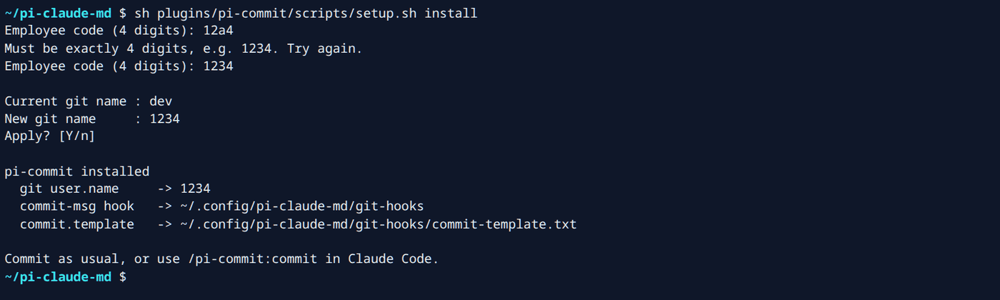
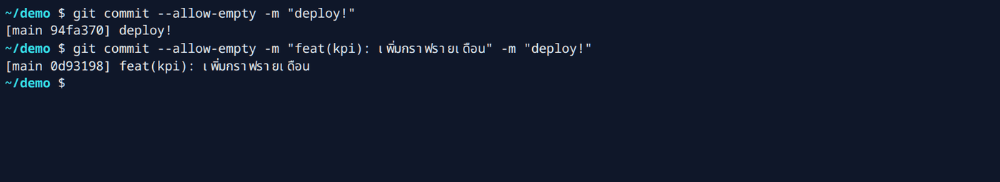
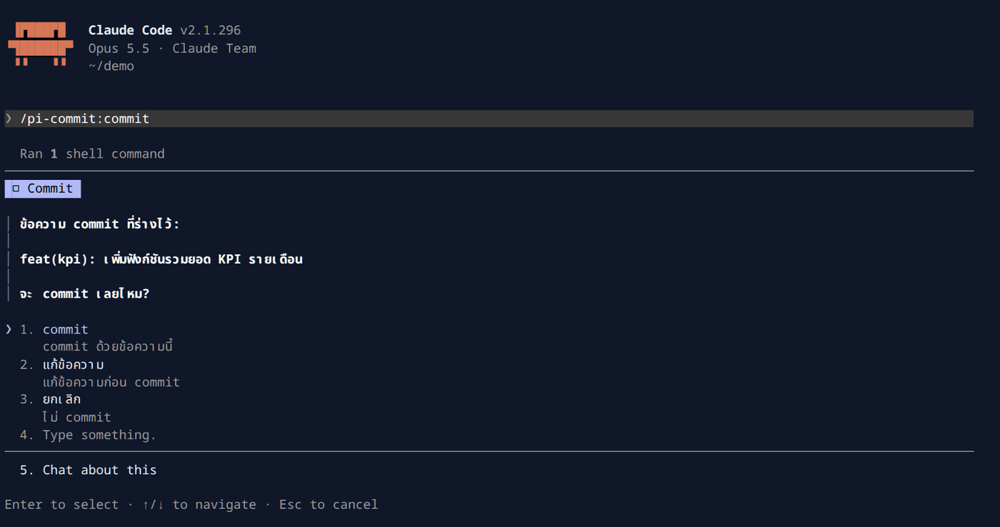
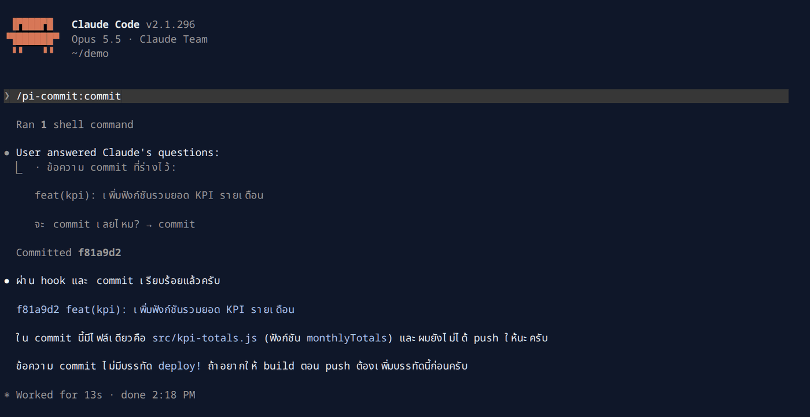
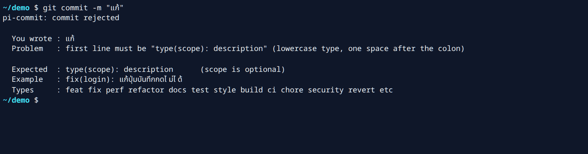
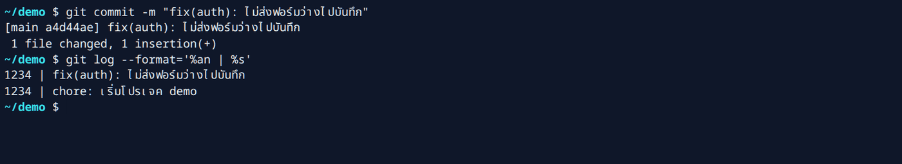
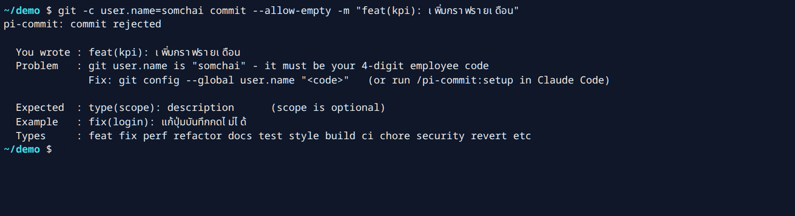
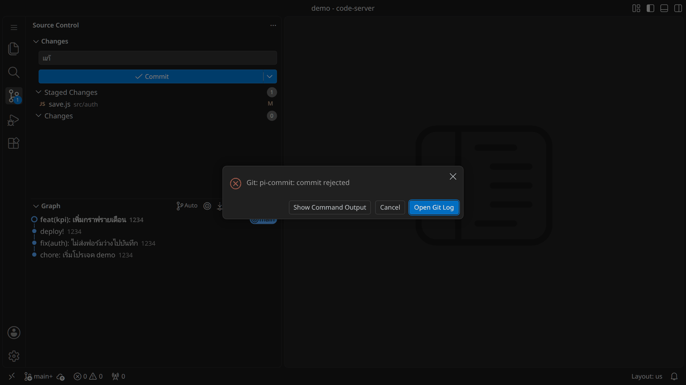
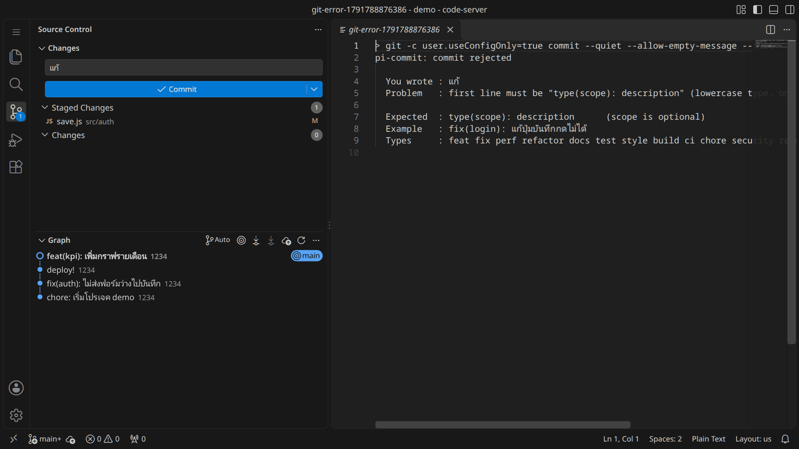
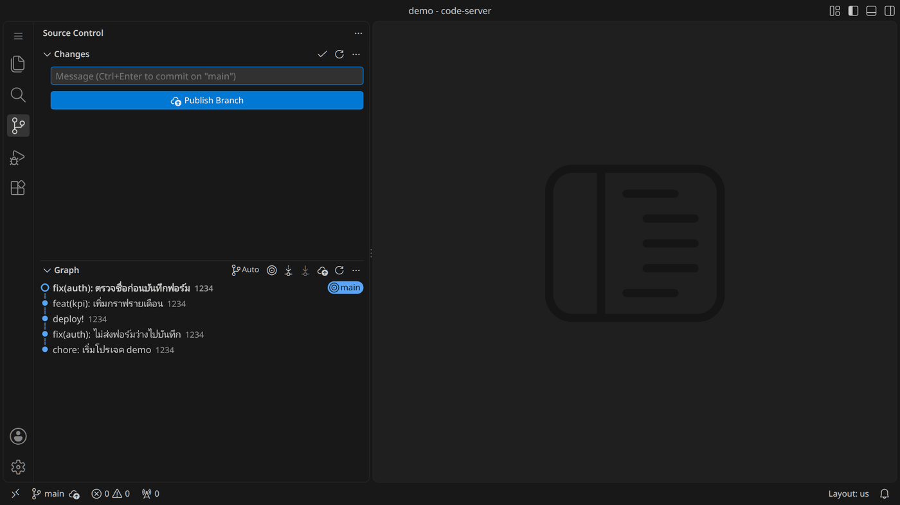

pi-commit — มาตรฐาน commit ของทีมpi-commit — the team commit standard
ทุก commit ต้องบอกว่า ใครทำ (git user.name = รหัสพนักงาน 4 หลัก) และ ทำอะไร (type(scope): description) เพื่อให้ระบบ task ของทีมวิเคราะห์งานรายคนและรายโปรเจกต์ได้อัตโนมัติในภายหลัง ถ้า commit ไม่ตรงรูปแบบ hook จะปฏิเสธและบอกว่าต้องแก้อะไร
Every commit says who did it (git user.name = your 4-digit employee code) and what was done (type(scope): description), so the team's task system can later analyse work per person and per project automatically. A hook refuses commits that do not follow the format and tells you what to fix.
- ติดตั้ง pluginInstall the plugin
/plugin marketplace add ken1lnw/pi-claude-mdแล้วthen/plugin install pi-commit@pi-claude-md(ขั้นตอนเต็มอยู่ในหัวข้อติดตั้ง)(full steps in the Install section) - ตั้งรหัสพนักงานSet your employee code
/pi-commit:setupแล้วใส่รหัส 4 หลักthen enter your 4-digit code - commit ตามปกติCommit as usual ใช้
git commit, VS Code หรือสั่งUsegit commit, VS Code, or run/pi-commit:commit
ภาพรวมการทำงานHow it works
ไม่ว่าจะ commit ทางไหน git จะรัน hook commit-msg ก่อนบันทึกทุกครั้ง hook ตรวจตามลำดับด้านล่าง
Whichever way you commit, git runs the commit-msg hook before saving. The hook checks in the order below.
เลื่อนผังไปทางซ้าย-ขวาเพื่อดูทั้งหมดScroll the chart sideways to see all of it.
อ่านผังเป็นข้อความRead the flowchart as text
- แก้โค้ด แล้ว commit ผ่าน Claude Code (
/pi-commit:commit), ช่อง Source Control ของ VS Code หรือgit commitใน terminal - git รัน hook
commit-msg - remote ไม่อยู่ใต้
tycthailandหรือไม่ → ไม่ตรวจ commit สำเร็จ - เป็น commit ที่ได้รับยกเว้น (
deploy!ล้วน, Merge, Revert, fixup!/squash!/amend!) หรือไม่ → ไม่ตรวจ commit สำเร็จ user.nameเป็นเลข 4 หลักพอดีหรือไม่ → ถ้าไม่ใช่ commit ถูกปฏิเสธ- บรรทัดแรกเป็น
type(scope): descriptionที่ type ถูกต้องและ description ≥ 10 ตัวอักษร ไม่คลุมเครือหรือไม่ → ถ้าไม่ใช่ commit ถูกปฏิเสธ - ถูกปฏิเสธ: อ่าน
ProblemและExampleแก้ข้อความ แล้ว commit ใหม่ (กลับไปข้อ 1) - ผ่านทั้งหมด: commit สำเร็จ author เป็นรหัสพนักงาน แล้วคุณ push เอง
- Change code, then commit via Claude Code (
/pi-commit:commit), the VS Code Source Control panel, orgit commitin a terminal. - git runs the
commit-msghook. - Is the remote under
tycthailand? If not, nothing is checked and the commit is saved. - Is it exempt (only
deploy!, Merge, Revert, fixup!/squash!/amend!)? If yes, nothing is checked and the commit is saved. - Is
user.nameexactly 4 digits? If not, the commit is rejected. - Is the first line
type(scope): descriptionwith a known type and a description of at least 10 characters that is not vague? If not, the commit is rejected. - Rejected: read
ProblemandExample, fix the message and commit again (back to step 1). - All passed: the commit is saved with the employee code as author, and you push yourself.
Claude Code ข้าม hook ไม่ได้ — plugin บล็อกคำสั่งที่มี --no-verify, -n หรือแก้ core.hooksPath ถ้าถูกบล็อกให้แก้ข้อความ commit ให้ถูกรูปแบบแล้ว commit ตามปกติ
Claude Code cannot bypass the hook. The plugin blocks commands that use --no-verify, -n or change core.hooksPath. If blocked, fix the commit message and commit normally.
ผังการติดตั้ง (setup)Setup flow
เลื่อนผังไปทางซ้าย-ขวาเพื่อดูทั้งหมดScroll the chart sideways to see all of it.
อ่านผังเป็นข้อความRead the flowchart as text
- รัน
/pi-commit:setupหรือsh plugins/pi-commit/scripts/setup.sh install - ใส่รหัสพนักงาน 4 หลัก ถ้าไม่ใช่เลข 4 หลักจะถามใหม่
- ยืนยัน
Apply? [Y/n] - ถ้า
core.hooksPathถูกตั้งโดยเครื่องมืออื่นอยู่แล้ว setup จะหยุด ไม่เปลี่ยนอะไร และบอกวิธีทำต่อ - ไม่เช่นนั้นตั้ง
user.name,core.hooksPath(~/.config/pi-claude-md/git-hooks) และcommit.templateแล้วเสร็จ
- Run
/pi-commit:setuporsh plugins/pi-commit/scripts/setup.sh install. - Enter your 4-digit employee code; if it is not exactly 4 digits you are asked again.
- Confirm
Apply? [Y/n]. - If
core.hooksPathis already set by another tool, setup stops, changes nothing and tells you how to proceed. - Otherwise it sets
user.name,core.hooksPath(~/.config/pi-claude-md/git-hooks) andcommit.template, then finishes.
ขั้นตอนทั้งหมดThe whole process
-
ติดตั้ง pluginInstall the plugin
ทำครั้งเดียวต่อเครื่องOnce per machine.
-
ตั้งรหัสพนักงานSet your employee code
ทำครั้งเดียว รหัสจะกลายเป็นชื่อผู้ commit ของคุณOnce. The code becomes your commit author name.
-
ทำงานและ commitWork and commit
ทุกครั้ง ผ่าน Claude Code, VS Code หรือ terminal ก็ได้Every time, through Claude Code, VS Code or a terminal.
-
ถ้าถูกปฏิเสธ อ่าน
Problemแก้ แล้ว commit ใหม่If rejected, readProblem, fix, commit againข้อความมีตัวอย่าง
Exampleให้ดูThe message includes anExampleto copy from. -
push เองPush yourself
ไม่มีอะไร push ให้ บรรทัด
deploy!ยังสั่ง build image เหมือนเดิมNothing pushes for you. Adeploy!line still triggers the image build as before.
ติดตั้งInstall
ใช้เวลาไม่ถึง 5 นาที เลือกวิธี A ถ้าใช้ Claude Code หรือวิธี B ถ้าไม่ใช้
Takes under 5 minutes. Pick A if you use Claude Code, or B if you do not.
A. ใช้ Claude Code (แนะนำ)A. With Claude Code (recommended)
พิมพ์ทีละบรรทัดใน Claude Code Claude จะถามรหัส 4 หลักแล้วรัน setup ให้
Type these one at a time in Claude Code. Claude asks for the 4-digit code and runs the setup.
/plugin marketplace add ken1lnw/pi-claude-md
/plugin install pi-commit@pi-claude-md
/reload-plugins
/pi-commit:setupอีกทางหนึ่ง: ถ้า clone repo ไว้แล้วให้รัน /install-skills เลือก pi-commit แล้วรัน /pi-commit:setup
Alternative: if you already cloned the repo, run /install-skills, pick pi-commit, then run /pi-commit:setup.
B. ไม่ใช้ Claude Code (terminal)B. Without Claude Code (terminal)
บน Windows ให้ใช้ Git Bash ซึ่งมากับ Git for Windows ต้องมีแค่ git ไม่ต้องมี Python
On Windows use Git Bash, which comes with Git for Windows. Only git is needed, no Python.
git clone https://github.com/ken1lnw/pi-claude-md.git
cd pi-claude-md
sh plugins/pi-commit/scripts/setup.sh install

ข้อความจริงจากภาพ (คัดลอกได้)Real output from the screenshot (copyable)
~/pi-claude-md $ sh plugins/pi-commit/scripts/setup.sh install
Employee code (4 digits): 12a4
Must be exactly 4 digits, e.g. 1234. Try again.
Employee code (4 digits): 1234
Current git name : dev
New git name : 1234
Apply? [Y/n]
pi-commit installed
git user.name -> 1234
commit-msg hook -> ~/.config/pi-claude-md/git-hooks
commit.template -> ~/.config/pi-claude-md/git-hooks/commit-template.txt
Commit as usual, or use /pi-commit:commit in Claude Code.ตรวจว่าติดตั้งแล้วCheck it
sh plugins/pi-commit/scripts/setup.sh statusผลที่ควรเห็นExpected output
git user.name : 1234
core.hooksPath : ~/.config/pi-claude-md/git-hooks
commit-msg hook : installed
OKควรรู้Good to know
- อีเมลและชื่อ/โปรไฟล์ GitHub ของคุณไม่ถูกแตะต้องYour email and GitHub username/profile are not touched.
user.nameเป็นค่า global ดังนั้น repo ส่วนตัวก็จะแสดงรหัสพนักงานด้วย แต่รูปแบบ commit บังคับเฉพาะ repo ใต้tycthailanduser.nameis global, so personal repos also show the code, but the format is only enforced intycthailandrepos.- หลังอัปเดต plugin ให้รัน
/pi-commit:setupอีกครั้ง (รหัสเดิม) เพื่อคัดลอก hook ตัวใหม่After updating the plugin run/pi-commit:setupagain (same code) to copy the new hook. - ถอนการติดตั้ง: ใช้คำสั่งด้านล่าง ระบบจะคืนค่า
user.nameเดิมให้Uninstall with the command below. Your previoususer.nameis restored.
sh plugins/pi-commit/scripts/setup.sh uninstallรูปแบบ commitCommit format
บรรทัดแรกของข้อความ commit ต้องเป็น type(scope): description บรรทัดถัดไป (body) จะเขียนหรือไม่ก็ได้
The first line of the commit message must be type(scope): description. A body below it is optional.
- type — ประเภทงานthe kind of work
- scope — ส่วนของระบบที่แก้ (ไม่ใส่ก็ได้ และถ้าไม่ใส่ให้ตัดวงเล็บออกด้วย)the area changed (optional; leave out the parentheses too if you skip it)
- description — ทำอะไรwhat was done
กฎRules
- type เป็นตัวพิมพ์เล็ก และต้องอยู่ในรายการด้านล่างtype is lowercase and from the list below.
- scope คือส่วนของระบบที่คุณแก้ เป็นคำภาษาอังกฤษพิมพ์เล็ก 1 คำ เช่น
auth,kpi,tasks,api,db,uiห้ามใช้ชื่อ task, รหัส task หรือชื่อคนscope is the part of the system you changed: one lowercase English word such asauth,kpi,tasks,api,db,ui. Not a task name or ID, and not a person. - หลังเครื่องหมาย
:เว้นวรรค 1 ช่องพอดีExactly one space after the:. - description เป็นภาษาไทยหรืออังกฤษก็ได้ ยาวอย่างน้อย 10 ตัวอักษร และบอกว่าเปลี่ยนอะไร ไม่ใช่ "update code" หรือ "minor changes"description is Thai or English, at least 10 characters, and says what changed, not "update code" or "minor changes".
รายการ typeTypes
| type | ใช้เมื่อUse for |
|---|---|
feat | เพิ่มความสามารถใหม่new feature |
fix | แก้บั๊กbug fix |
perf | ทำให้เร็วขึ้นperformance |
refactor | ปรับโครงโค้ด พฤติกรรมเหมือนเดิมrestructure, same behavior |
docs | เอกสารdocumentation |
test | เทสtests |
style | จัด format ไม่เปลี่ยน logicformatting only |
build | dependency, Dockerfile, การ builddeps, Docker, build |
ci | GitHub Actionspipeline |
chore | งานดูแลทั่วไปmaintenance |
security | แก้ช่องโหว่vulnerability fix |
revert | ย้อน commitundo a commit |
etc | งานที่ไม่เข้าหมวดไหนanything else |
ตัวอย่างที่ผ่านและไม่ผ่านAccepted and rejected
| บรรทัดแรกFirst line | ผลResult | เหตุผลWhy |
|---|---|---|
feat(kpi): เพิ่มกราฟรายเดือนในหน้า KPI | ผ่านAccepted | มี scope ครบtype, scope and description |
fix: แก้ปุ่มบันทึกกดไม่ได้ตอนไม่มีไฟล์แนบ | ผ่านAccepted | ไม่ใส่ scope ได้scope is optional |
perf(queries): add index for task list by assignee | ผ่านAccepted | เขียนภาษาอังกฤษได้English is fine |
etc: สรุป requirement ระบบ WMS เฟส 2 | ผ่านAccepted | งานที่ไม่เข้าหมวดใช้ etcuse etc when nothing else fits |
แก้ | ไม่ผ่านRejected | ไม่มี typeno type |
Feat: add login | ไม่ผ่านRejected | type ตัวพิมพ์ใหญ่uppercase type |
fix:แก้ปุ่มบันทึกกดไม่ได้ | ไม่ผ่านRejected | ไม่เว้นวรรคหลัง :no space after : |
feature: เพิ่มกราฟรายเดือนในหน้า KPI | ไม่ผ่านRejected | type ไม่อยู่ในรายการunknown type |
fix: แก้บั๊ก | ไม่ผ่านRejected | สั้นเกินไป (7 ตัวอักษร)too short (7 characters) |
fix: update code | ไม่ผ่านRejected | คลุมเครือเกินไปtoo vague |
deploy! fix login | ไม่ผ่านRejected | deploy! ต้องอยู่บรรทัดของตัวเองdeploy! must be on its own line |
Emp: <รหัส> — เติมให้อัตโนมัติEmp: <code> — added for you
เมื่อ commit ผ่าน hook จะเติมบรรทัด Emp: <รหัส> ไว้ท้าย message ให้เอง ไม่ต้องพิมพ์ ถ้ามีอยู่แล้ว (เช่นตอน --amend) จะแทนค่าเดิม ไม่เติมซ้ำ บรรทัดนี้ทำให้คนที่เปิดดู commit บนเว็บ GitHub เห็นรหัสด้วย เพราะหน้าเว็บ GitHub แสดงชื่อบัญชี GitHub ไม่ใช่ user.name
When a commit passes, the hook appends Emp: <code> to the message for you — nothing to type. If it is already there (e.g. on --amend) the value is replaced, never duplicated. This line lets anyone viewing the commit on github.com see the code too, because the GitHub web page shows the GitHub account, not user.name.
fix(login): แก้ปุ่มบันทึกกดไม่ได้
Emp: 1234commit ที่ไม่ถูกตรวจ (ด้านล่าง) จะไม่ถูกเติม
Commits that are not checked (below) are left as they are.
สิ่งที่ไม่ถูกตรวจWhat is not checked
- commit ที่มีแค่
deploy!Commits that are onlydeploy! - Merge commitMerge commits
Revert "…"fixup!,squash!,amend!- repo ที่ remote ไม่ใช่
tycthailandRepos whose remote is nottycthailand
deploy!
ใช้ได้เหมือนเดิมทุกอย่าง ใส่ deploy! ไว้ บรรทัดของตัวเอง ใต้บรรทัดแรก หรือ commit เฉพาะ deploy! ก็ได้
Works exactly as before. Put deploy! on its own line under the first line, or commit a bare deploy!.
git commit -m "feat(kpi): เพิ่มกราฟรายเดือน" -m "deploy!"

ข้อความจริงจากภาพ (คัดลอกได้)Real output from the screenshot (copyable)
~/demo $ git commit --allow-empty -m "deploy!"
[main 94fa370] deploy!
~/demo $ git commit --allow-empty -m "feat(kpi): เพิ่มกราฟรายเดือน" -m "deploy!"
[main 0d93198] feat(kpi): เพิ่มกราฟรายเดือนcommit ผ่าน Claude CodeCommit with Claude Code
-
stage ไฟล์ หรือไม่ต้องก็ได้Stage files, or not
ถ้ายังไม่ได้ stage Claude จะถามว่าจะรวมไฟล์ไหนIf nothing is staged, Claude asks which files to include.
-
พิมพ์
/pi-commit:commitType/pi-commit:commitหรือพูดว่า "commit ให้หน่อย"or just say "commit this for me".
-
Claude อ่าน diff และร่างข้อความในภาษาของคุณClaude reads the diff and drafts the message in your language
ถ้างานปนกัน (เช่น แก้บั๊กกับเพิ่มฟีเจอร์) จะเสนอให้แยกเป็นหลาย commitIf the work is mixed (for example a fix and a feature) it offers to split it into separate commits.
-
เลือก commit, แก้ข้อความ หรือยกเลิกChoose commit, edit, or cancel
hook ตรวจข้อความอีกชั้นก่อนบันทึกThe hook checks the message once more before it is saved.
-
Claude แสดงผลและ ไม่ pushClaude shows the result and does not push
การ push เป็นหน้าที่ของคุณPushing is up to you.


ข้อความจากภาพ (คัดลอกได้)Text from the screenshot (copyable)
ข้อความ commit ที่ร่างไว้:
feat(kpi): เพิ่มฟังก์ชันรวมยอด KPI รายเดือน
จะ commit เลยไหม?
1. commit
commit ด้วยข้อความนี้
2. แก้ข้อความ
แก้ข้อความก่อน commit
3. ยกเลิก
ไม่ commit

deploy!Committed. Claude says it did not push and that the message has no deploy! line.ข้อความจากภาพ (คัดลอกได้)Text from the screenshot (copyable)
Committed f81a9d2
ผ่าน hook และ commit เรียบร้อยแล้วครับ
f81a9d2 feat(kpi): เพิ่มฟังก์ชันรวมยอด KPI รายเดือน
ใน commit นี้มีไฟล์เดียวคือ src/kpi-totals.js (ฟังก์ชัน monthlyTotals) และผมยังไม่ได้ push ให้นะครับ
ข้อความ commit ไม่มีบรรทัด deploy! ถ้าอยากให้ build ตอน push ต้องเพิ่มบรรทัดนี้ก่อนครับถ้าสั่งให้ข้าม hookIf told to skip the hook
ถ้าสั่ง Claude ให้ใช้ --no-verify plugin จะบล็อกด้วยข้อความนี้
If Claude is told to use --no-verify, the plugin blocks it with this message.
PreToolUse:Bash hook error: pi-commit: blocked. Do not skip the commit-msg hook (--no-verify, -n, core.hooksPath). Rewrite the message as "type(scope): description" and commit normally. If -n is part of the message text, reword it.commit แบบไม่ใช้ skillCommit without the skill
ทาง terminalTerminal
ถูกปฏิเสธ — บรรทัด Problem บอกสาเหตุ Example ให้ตัวอย่างที่ใช้ได้
Rejected. The Problem line gives the cause and Example shows a message that works.


ข้อความจริงจากภาพ (คัดลอกได้)Real output from the screenshot (copyable)
~/demo $ git commit -m "แก้"
pi-commit: commit rejected
You wrote : แก้
Problem : first line must be "type(scope): description" (lowercase type, one space after the colon)
Expected : type(scope): description (scope is optional)
Example : fix(login): แก้ปุ่มบันทึกกดไม่ได้
Types : feat fix perf refactor docs test style build ci chore security revert etcผ่าน — git log แสดงรหัสพนักงานเป็นชื่อผู้ commit
Accepted. git log shows the employee code as the author.


ข้อความจริงจากภาพ (คัดลอกได้)Real output from the screenshot (copyable)
~/demo $ git commit -m "fix(auth): ไม่ส่งฟอร์มว่างไปบันทึก"
[main a4d44ae] fix(auth): ไม่ส่งฟอร์มว่างไปบันทึก
1 file changed, 1 insertion(+)
~/demo $ git log --format='%an | %s'
1234 | fix(auth): ไม่ส่งฟอร์มว่างไปบันทึก
1234 | chore: เริ่มโปรเจค demoชื่อผิด (ยังไม่ได้ทำ setup) — ข้อความถูกต้องแต่ถูกปฏิเสธเพราะ user.name ไม่ใช่เลข 4 หลัก
Wrong name (setup not done). The message is fine but it is rejected because user.name is not 4 digits.


Fix: บอกคำสั่งที่ต้องรันThe Fix: line gives the command to run.ข้อความจริงจากภาพ (คัดลอกได้)Real output from the screenshot (copyable)
~/demo $ git -c user.name=somchai commit --allow-empty -m "feat(kpi): เพิ่มกราฟรายเดือน"
pi-commit: commit rejected
You wrote : feat(kpi): เพิ่มกราฟรายเดือน
Problem : git user.name is "somchai" - it must be your 4-digit employee code
Fix: git config --global user.name "<code>" (or run /pi-commit:setup in Claude Code)
Expected : type(scope): description (scope is optional)
Example : fix(login): แก้ปุ่มบันทึกกดไม่ได้
Types : feat fix perf refactor docs test style build ci chore security revert etcทาง VS Code (ช่อง Source Control)VS Code (Source Control panel)
- พิมพ์ข้อความในช่อง Message แล้วกด Ctrl+Enter (Commit)Type the message in the Message box and press Ctrl+Enter (Commit)
- ถ้าถูกปฏิเสธ VS Code จะแสดง dialog "Git: pi-commit: commit rejected"If it is rejected, VS Code shows a dialog "Git: pi-commit: commit rejected"
-
กด Show Command Output เพื่อดู
ProblemและExampleClick Show Command Output to seeProblemandExample -
แก้ข้อความ แล้ว commit ใหม่Fix the message and commit again
VS Code เก็บข้อความและไฟล์ที่ stage ไว้ให้VS Code keeps your text and staged files.




ข้อความเต็ม (คัดลอกได้)Full text (copyable)
pi-commit: commit rejected
You wrote : แก้
Problem : first line must be "type(scope): description" (lowercase type, one space after the colon)
Expected : type(scope): description (scope is optional)
Example : fix(login): แก้ปุ่มบันทึกกดไม่ได้
Types : feat fix perf refactor docs test style build ci chore security revert etc

ข้อความ errorError messages
ดูบรรทัด Problem ในข้อความที่ถูกปฏิเสธ แล้วเทียบกับตารางนี้
Find the Problem line in the rejection message and match it here.
| Problem | ความหมายMeaning | วิธีแก้Fix |
|---|---|---|
first line must be "type(scope): description" … |
ไม่มี type, type เป็นตัวพิมพ์ใหญ่, ไม่เว้นวรรคหลัง : หรือ scope ว่างMissing or uppercase type, no space after :, or an empty scope. |
เขียนใหม่เป็นRewrite as fix: … |
unknown type "feature" |
type ไม่อยู่ในรายการThe type is not in the list. | ใช้หนึ่งใน 13 typeUse one of the 13 types. |
description is too short - use at least 10 characters |
description สั้นกว่า 10 ตัวอักษรThe description is under 10 characters. | บอกว่าเปลี่ยนอะไรและที่ไหนSay what changed and where. |
description "…" is too vague |
เช่น "update code"For example "update code". | อธิบายสิ่งที่เปลี่ยนจริงDescribe the actual change. |
put deploy! on its own line … |
บรรทัดแรกขึ้นต้นด้วย deploy!The first line starts with deploy!. |
-m "fix(...): ..." -m "deploy!" |
git user.name is "…" - it must be your 4-digit employee code |
ยังไม่ได้ทำ setup หรือ repo นั้นตั้ง user.name ทับไว้Setup is not done, or the repo overrides the name. |
รัน /pi-commit:setup หรือRun /pi-commit:setup or git config --global user.name "1234"ถ้า repo ตั้งทับไว้ ให้ลบด้วย git config --unset user.name ใน repo นั้นIf the repo overrides it, remove that with git config --unset user.name inside the repo. |
คำถามที่พบบ่อยFAQ
บนเว็บ GitHub เห็นชื่ออะไรWhich name shows on github.com?
หน้าเว็บ GitHub แสดง บัญชี GitHub ของคนที่ commit (จับคู่จาก email) ไม่ใช่ user.name รหัสพนักงานจึงเห็นได้จากบรรทัด Emp: ใต้ข้อความ commit ส่วน git log, VS Code และ GitHub API (commit.author.name) แสดงรหัสเป็น author ตรง ๆ
github.com shows the committer's GitHub account (matched by email), not user.name, so the code is visible through the Emp: line under the message. git log, VS Code and the GitHub API (commit.author.name) show the code as the author directly.
commit ที่ผิดรูปแบบหลุดเข้าไปได้A badly formatted commit went through
repo นั้นไม่ได้อยู่ใต้ tycthailand หรือเครื่องนั้นยังไม่ได้รัน setup ลองตรวจด้วย
The repo is not under tycthailand, or setup has not been run on that machine. Check with:
sh plugins/pi-commit/scripts/setup.sh statussetup บอกว่า core.hooksPath is already setSetup says core.hooksPath is already set
เครื่องมืออื่นใช้ global hooks อยู่ setup ไม่ได้เปลี่ยนอะไรเลย คุณต้องตัดสินใจเองว่าจะรันคำสั่งนี้แล้วทำ setup ใหม่หรือไม่
Another tool owns the global hooks and setup changed nothing. You decide whether to run this and then run setup again.
git config --global --unset core.hooksPathcommit บนเว็บ GitHub ถูกตรวจไหมAre commits made on the GitHub website checked?
ไม่ถูกตรวจ เพราะไม่มี hook รันบนเว็บ แต่ยังควรเขียนในรูปแบบเดียวกัน
No, because no hook runs there. Still write them in the same format.
เปลี่ยนอีเมลหรือโปรไฟล์ GitHub ของฉันไหมDoes it change my email or GitHub profile?
ไม่ เปลี่ยนเฉพาะ user.name, core.hooksPath และ commit.template ระดับ global
No. Only the global user.name, core.hooksPath and commit.template.
repo มี .git/hooks/commit-msg ของตัวเองอยู่แล้วMy repo already has its own .git/hooks/commit-msg
ยังทำงานต่อ หลังจากการตรวจของ pi-commit ผ่านแล้ว
It still runs, after pi-commit's check passes.
อัปเดต pluginUpdating the plugin
ใน Claude Code เปิด /plugin ไปที่ Marketplaces เลือก pi-claude-md แล้วอัปเดต (หรือเปิด auto-update) จากนั้นรัน /pi-commit:setup อีกครั้งเพื่อคัดลอก hook ตัวใหม่
In Claude Code open /plugin, go to Marketplaces, pick pi-claude-md and update (or enable auto-update). Then run /pi-commit:setup again to copy the new hook.
ถอนการติดตั้งUninstalling
รันคำสั่งแรกเพื่อคืนค่า git แล้วรันคำสั่งที่สองเพื่อถอน plugin
Run the first command to restore git, then the second to remove the plugin.
sh plugins/pi-commit/scripts/setup.sh uninstall
claude plugin uninstall pi-commit@pi-claude-md